IGEL Licence Portal: A portal for admins who open it twice a year
IGEL’s licence portal is ten years old, and most customers open it about once a year to renew. IGEL had already done its UX research. I led Apexon’s response and took it further: a portal that tells you what to do next, and a Copilot for the partners who use it every day.

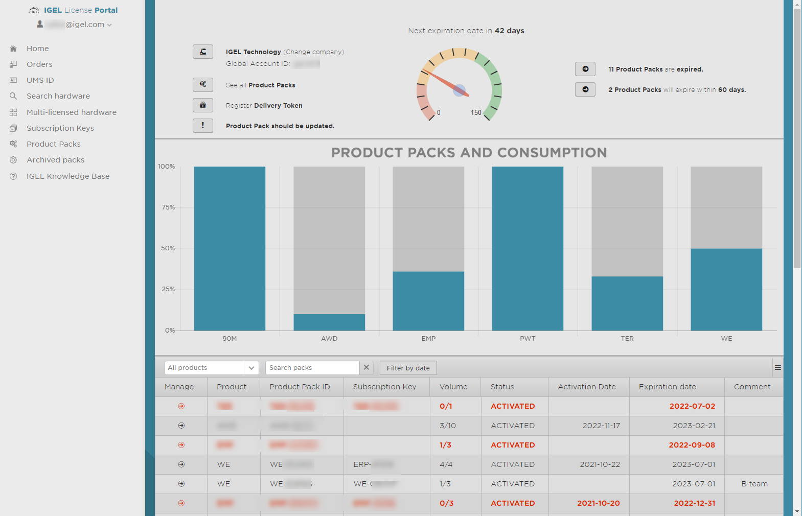
Clickable prototype · 14 screens
Click through the prototype yourself
Use the arrows at the bottom right to follow the nine‑step tour, or click around freely. Sample data throughout.
Things to try
01 · Walkthrough
See it working
I presented the redesign to IGEL as the clickable prototype above and this recorded walkthrough. The walkthrough shows how the screens fit together. The decisions that follow explain each one.
Watch the walkthrough
The portal map
Licence Copilot
Ask in plain English, get a table or chart back
Home
What needs attention, and the next best actions
Licences
Every product pack, its status, usage and expiry
Redeem
Enter a delivery token to unlock new packs
UMS IDs
Servers, their assigned packs and Auto Assign
Devices
Which device holds which licence, and which don’t
Orders
Purchases, quotes and tokens ready to redeem
Reports
Utilisation, renewals by quarter, CSV downloads
Seven pages in the side menu, plus the Copilot. The company switcher, Global Account ID and “Browse guide” sit in the header on every page.
02 · My contribution
IGEL had done the research.
My job was to take it further
In June 2026, IGEL asked vendors to rebuild its licence portal. Apexon answered, and I led the project. IGEL handed us its own groundwork: personas, a UX audit and a first draft of version 2.0. On our call, IGEL’s CIO said even that draft had room to grow. We had about two weeks between that call and the deadline.
Who owned what
I designed
The redesign, the guided tasks, a clickable prototype with a nine‑step tour, the Licence Copilot concept, and the walkthrough video.
IGEL’s UX lead had already done
The workshops, two personas, five use cases, a 23‑page UX audit with seven recommendations, and a first 2.0 design. All of it in 2025, a year before the RFP.
The team owned
What I worked with, but didn’t own.
Apexon’s account lead
The client relationship and the RFP itself
Apexon’s engineering and QA leads
Architecture, migration, testing and the estimate
IGEL’s CIO
The brief, the two phases, and the answers to our questions
How the project ran
Read the handover
IGEL’s personas, audit, support feedback and 2.0 draft
Ask
An hour with IGEL’s CIO on June 8, and 46 written questions
Design
A clickable prototype of 14 screens and five flows, on top of the seven audit moves
Present
The clickable prototype and a recorded walkthrough, as part of Apexon’s response
03 · The problem
A ten‑year‑old portal, used at very different speeds
Customers and partners use the licence portal to activate keys, assign product packs and keep track of their licences. It’s a ten‑year‑old Java application with fewer than 30 pages. It works, but little of it is documented, and it doesn’t work on a tablet. An earlier attempt to replace it had failed, so IGEL froze it and split the rebuild into two phases. Phase 1 was a new front end, with no change to the business logic underneath.
Open it about once a year, to renew. Many never become fluent, and some are covering for a colleague.
Use it many times a day. Reporting means an Excel export, which IGEL’s CIO called “very cumbersome”.
Power users who can change any licence for any customer, and need a record of who changed what.
Make it clear for the once‑a‑year customer, without slowing down the partner who lives in it.
A renewal, before the redesign
An email says a subscription is about to expire. Joachim last logged in months ago.
What it tookRemember the portal existsFind the loginSwitching company in the old portal means a right‑click menu, which few people expect on a website.
What it tookFind the companyCheck the Global Account IDPacks show as codes like EMP, TER and WE, with statuses such as BOOKED and BOOKED_ILP.
What it tookDecode the abbreviationsGuess what each status meansEvery row has the same small arrow. Nothing says which pack needs renewing first.
What it tookNo clear next stepRisk of a duplicate licenceA once‑a‑year admin could finish a renewal still unsure whether they’d done it right.
Pieced together from the old portal, IGEL’s personas and its support team’s feedback. The right‑click menu comes from IGEL’s CIO, who walked us through the portal on our call.
04 · What I started from
I started from IGEL’s
own research
IGEL’s UX lead had already run workshops, written two personas, mapped five use cases and audited the portal in 23 pages. He was open that none of it had been tested with users; it came from internal sources. Two more inputs filled the gaps: a page‑by‑page list of fixes from IGEL’s support team, and the CIO’s answers on our call.
What IGEL handed over
From IGEL’s UX audit and persona sheet, June 2025.
Three inputs
IGEL’s UX audit
23 pages and seven recommendations, built from internal sources. Not tested with users.
IGEL support’s feedback
A page‑by‑page list of fixes, from section names to colour rules for expiry dates.
The CIO, on our call
Who uses the portal and how often, what reporting lacks, and what Phase 1 can and can’t change.
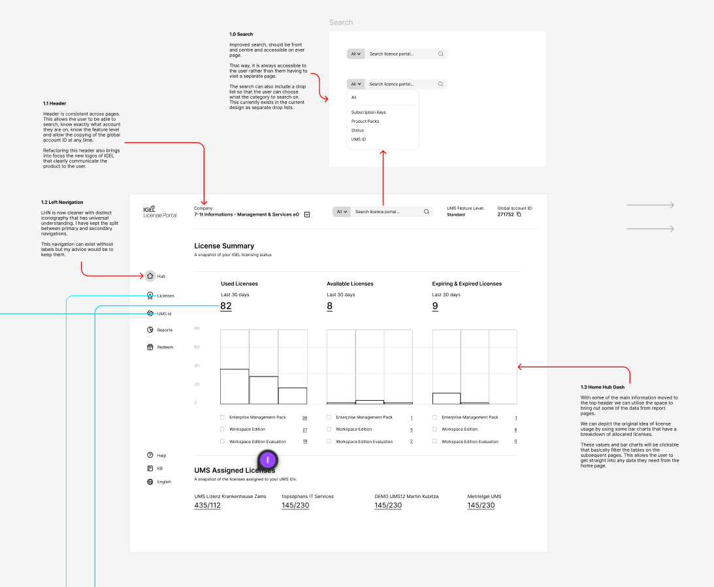
The two people IGEL designed for
Maria
Fills in for two weeks
An IT admin who has never used IGEL products. She’s covering while Joachim is on leave, doesn’t know where to find anything, and isn’t even aware she needs to do more than press “remove device”.
“I just need something that shows me what to do, step by step, so I don’t miss anything while I’m filling in.”
Joachim
Rarely uses the portal
An IGEL admin who opens the portal so rarely he never becomes fluent in it. He licenses devices, swaps damaged hardware and runs renewals, and has to avoid creating duplicate licences.
“I need a system that tells me exactly what to do next, alerts me when something needs my attention, and helps me avoid mistakes, because I don’t use this every day.”
IGEL’s personas, from its 2025 workshops. Quotes as written on the persona sheet.
“Customers won’t understand BOOKED and BOOKED_ILP”
IGEL supportStatus codes have to become words people already use
Plain names for statuses and actions
Decision 3Joachim needs “to see when he needs to do something out of the ordinary”
PersonaHome should show what needs doing, not just numbers
Home as a to‑do list
Decision 1Maria “isn’t even aware that she needs to do anything but press remove device”
PersonaShe needs the steps, not a cleaner screen
Guided tasks
Decision 2Support asked for “days left” and colour bands for expiry and usage
IGEL supportUrgency should be visible without reading dates
Renew weighted by urgency
Decision 4Partners export to Excel to do basic reporting
IGEL’s CIOThe people who use the portal most get the least from it
The Licence Copilot
Decision 6What changed my thinking
The draft was cleaner. It wasn’t smarter.
IGEL’s 2.0 draft applied the audit well: a neutral palette, the company in the header, a table for licences. But it still showed you numbers and left you to work out what they meant. The CIO asked for something “more intelligent” than endless lists. That became the brief I gave myself.
05 · Design direction
Keep IGEL’s audit,
and add the next step
The seven audit moves were right, and Phase 1 couldn’t touch the business logic anyway. So I kept every move and every feature. What I added was a layer on top: a portal that notices what needs doing and says so, in words a once‑a‑year admin understands.
The principle
Design for how often people actually use it.
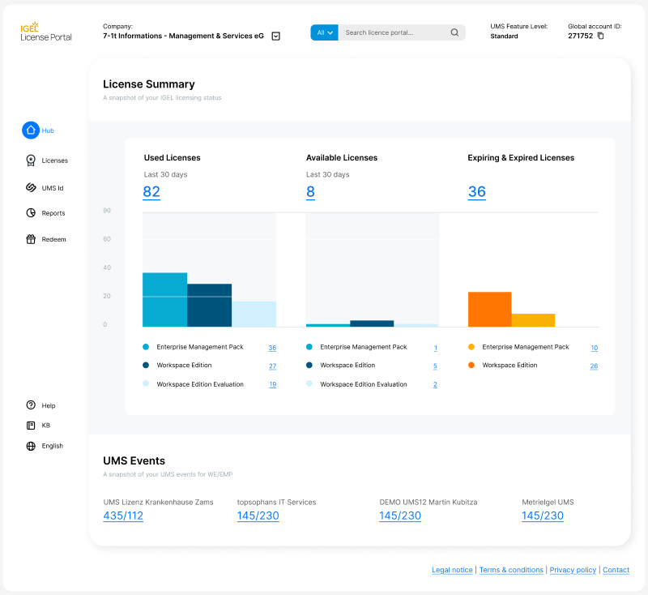
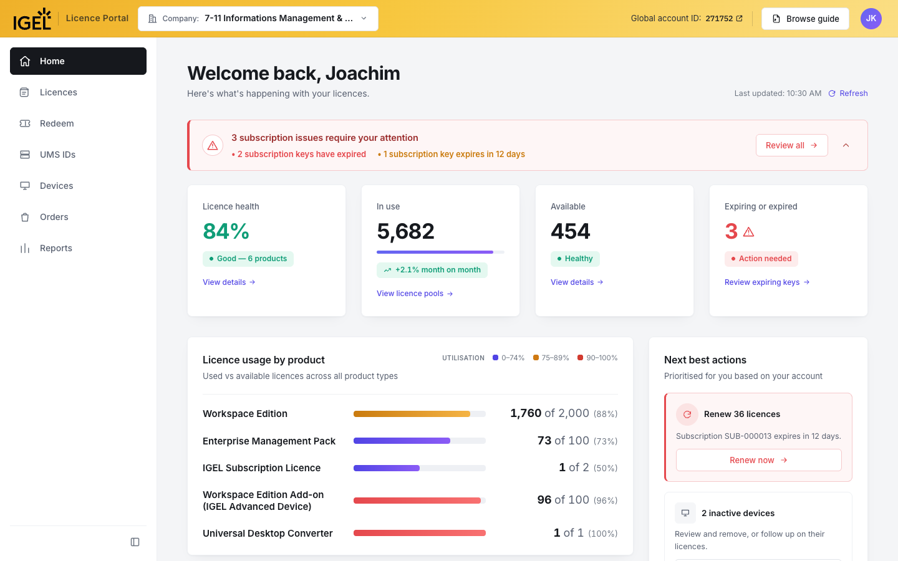
The seven audit moves, from IGEL’s audit, all kept
Cut the palette back to neutrals, and strip the legacy glows and shadows
Keep icons only where they help someone find their way
One clear system of primary, secondary and tertiary actions
A title and subheader on every page, so you always know where you are
Plain language instead of jargon and abbreviations
Drill‑down tables instead of accordions and modals, where they fit the task
Order components by importance, not by the old layout
What Phase 1 allowed
Front end only
No change to the business logic, the database or the APIs underneath
Desktop first
About 90% of use is on 14 to 24‑inch screens. Tablets and phones get the basics
Four languages
English, German, Spanish and French, so labels need room to grow
WCAG AA
IGEL’s accessibility target, so colour can never be the only signal
From IGEL’s answers to our written questions and the CIO’s call.
06 · Decision 1 of 6
Turn Home into a to‑do list
IGEL’s draft opened on three bar charts: used, available and expiring licences. Accurate, but it left Joachim to work out what to do about them. I kept the numbers and added an alert at the top that says in plain words what needs attention, and a “Next best actions” panel that turns each problem into one button. Below them, keys expiring in the next 120 days are ordered by urgency, with days left instead of a date, which is what IGEL support asked for.
Charts only, as in the draft · a separate alerts page · alerts and actions on Home
A plain‑language alert at the top of Home, and Next best actions beside the usage
Someone has to decide which action ranks first, and those rules aren’t defined yet
Presented in the RFP response. Not yet tested with admins
“2 subscription keys have expired”, not a status code
Each problem comes with the button that fixes it, from renewals to inactive devices
120 days or less, days left instead of dates, as IGEL support asked
Latest orders and their token status, one click from Home
06 · Decision 2 of 6
Walk rare users through rare tasks
Maria’s persona says she “isn’t even aware that she needs to do anything but press remove device”. A cleaner screen doesn’t fix that. She needs the steps. So guided tasks get a page of their own, one for each job admins do rarely, from licensing a new device to converting an old pack. Each says how long it takes, and Maria can find them before she even signs in, from a link on the login page.
A tour on first login · articles in the Knowledge Base · guides inside the portal
A Guided tasks page, with each task in plain English and a rough time to complete
Someone has to keep every guide in step with the portal as it changes
Presented in the RFP response. The guide content would be written with IGEL support
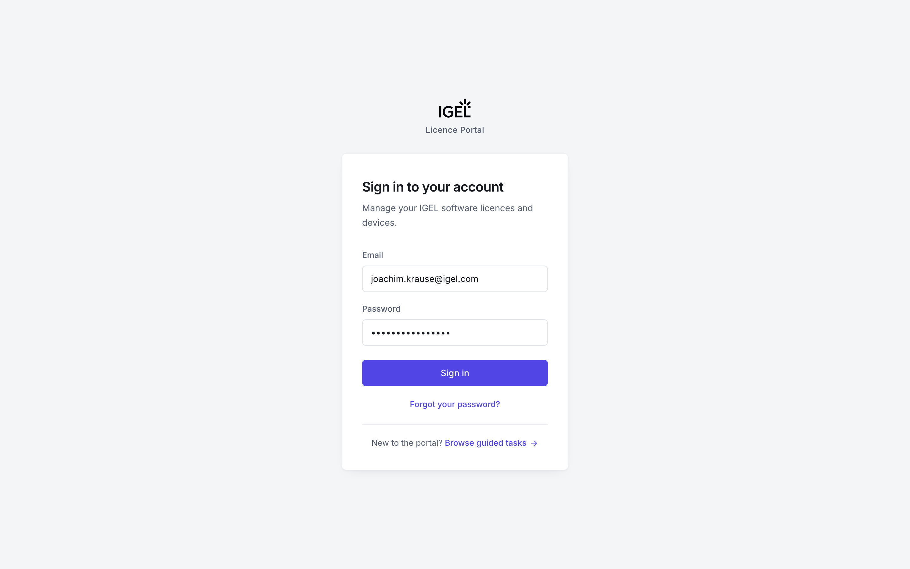
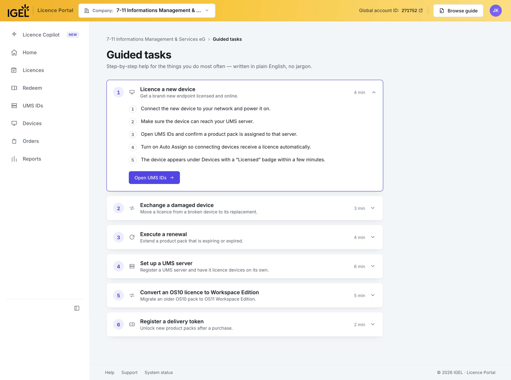
Each guide is named after what the admin is trying to do, not after a page in the portal
A rough time to complete, so a covering admin knows whether to start now
Each step says what to do and where, so nothing is missed
“Open UMS IDs” takes you straight to the page the step needs
06 · Decision 3 of 6
Say it plainly, and make
the next step obvious
IGEL’s support team put it bluntly: “Customers won’t understand BOOKED and BOOKED_ILP.” The audit asked for the same thing. I replaced codes and abbreviations with plain names, kept the flat, neutral look the audit recommended, and gave every button a clear rank, so the most important action is always the most visible one.
Tooltips to explain the codes · rename everything · rename what people act on
Plain names for navigation, statuses and actions, with the product name shown under every code
Support staff who know the old codes have to learn the new names
Presented in the RFP response. The wording still needs checking with real admins
Navigation, before and after
Mapped from the before and after screens. Archived packs are assumed to live under Licences as a status, and multi‑licensed hardware under Devices.
06 · Decision 4 of 6
Show urgency without
making people read dates
The audit had already swapped accordions for a table, and IGEL’s draft used one. Support asked for more: days left instead of dates, and colour bands for expiry and usage. I built on that. Status filters sit at the top, usage sits beside each pack, and the Renew button changes weight with urgency: solid when a pack has expired, outlined when it’s expiring, gone when it’s active.
Colour the dates · a separate expiring list · urgency built into each row
Status filters, a usage bar on every pack, and a Renew button weighted by urgency
Colour carries meaning, so every status also needs a word, for WCAG AA
Presented in the RFP response. Not yet tested with admins
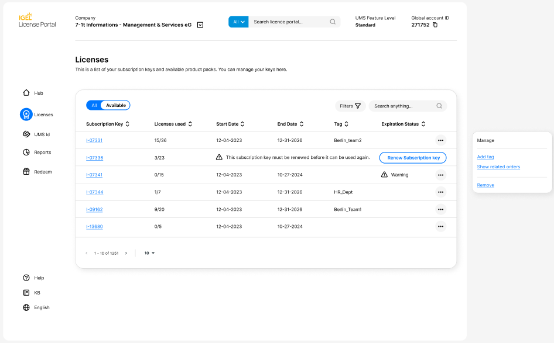

New, activated, expiring and expired packs are one click apart
Licences used sit in the same row, so packs can be compared
Solid when a pack has expired, outlined when it’s expiring, gone when it’s active
Every pack code has its product name under it, such as Workspace Edition
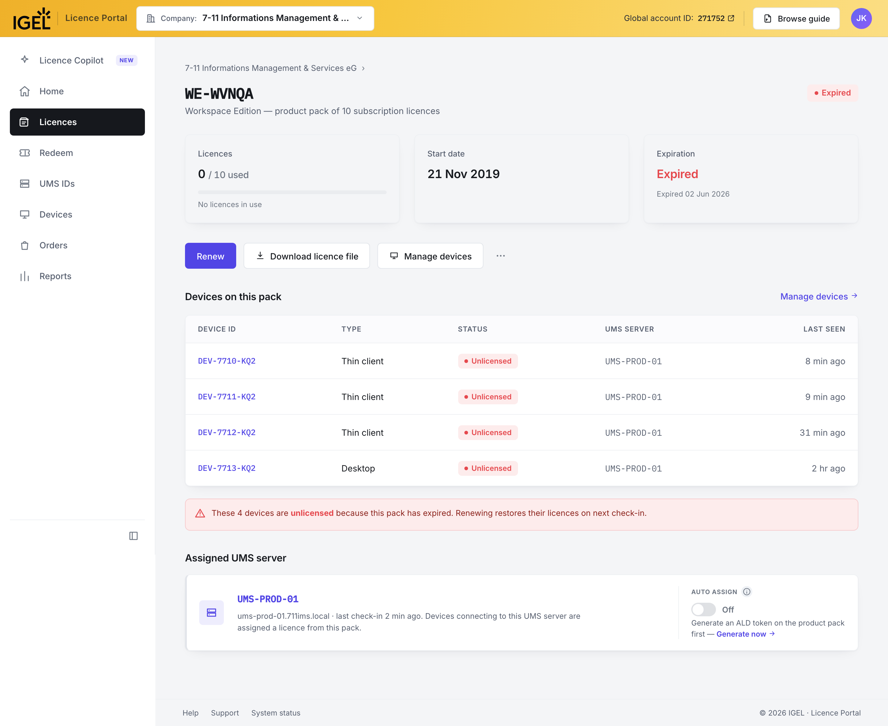
06 · Decision 5 of 6
Slow down the risky steps,
then point to what’s next
Renewing changes what a customer pays for. Converting an OS10 pack can’t be undone. So neither is a one‑click button. Renewal gets a review page that shows the new expiry date before you confirm. Conversion spells out what happens to each device and asks you to tick that you understand. Once a renewal is done, the success page points to the next expired pack, so Joachim doesn’t have to go looking.
A one‑click button in the table · a confirmation pop‑up · a full review page
A review page for renewals and conversions, and a success page that suggests the next step
One extra page per renewal, which a partner doing several a day may find slow
In the clickable prototype. Not yet tested with admins
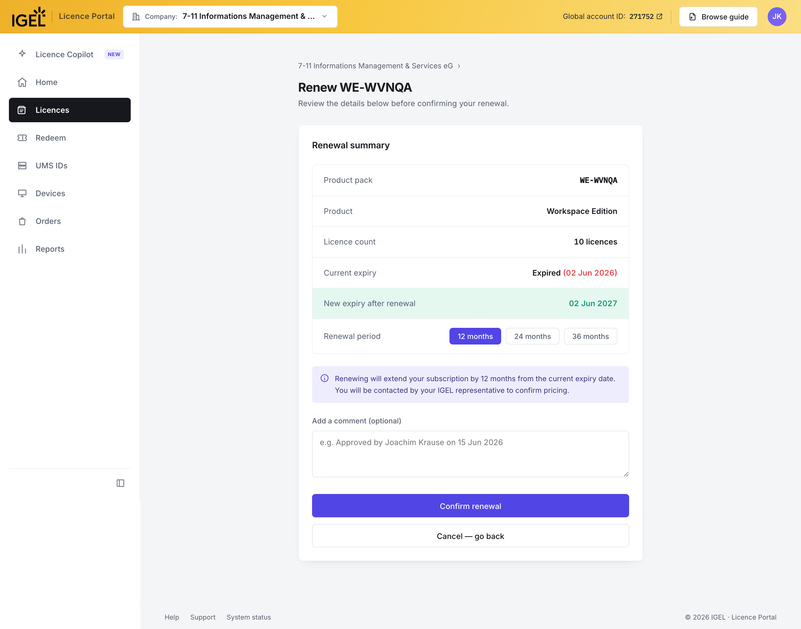
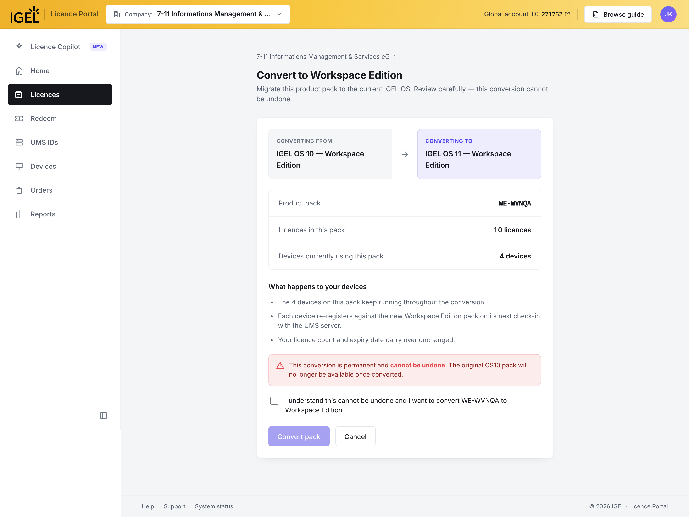
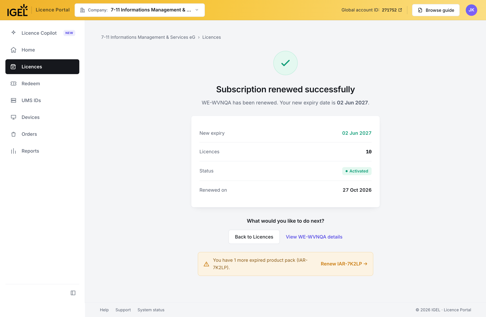
The new expiry date is shown before anything is confirmed
Conversion names the risk in red and needs a tick to continue
An optional comment, such as who approved the renewal
Every success page offers the next sensible step
06 · Decision 6 of 6
Give partners answers,
not exports
Partners and MSPs use the portal many times a day, and reporting was its weakest part: an Excel export the CIO called “very cumbersome”. IGEL asked for exports and in‑app dashboards, so Reports has both: utilisation by product, renewals by quarter and five CSV downloads. Then I went one step further with a Licence Copilot. You ask a question in plain English, and it builds the table or chart that answers it, from your own data. It suggests actions, but never takes them.
Better exports · a fixed set of dashboards · ask a question, get the view
A Copilot layer on the redesigned portal, alongside exports and dashboards
Answers have to be right every time, and IGEL’s legal and security teams would need to approve it
A concept, built into the clickable prototype. Not part of the agreed build
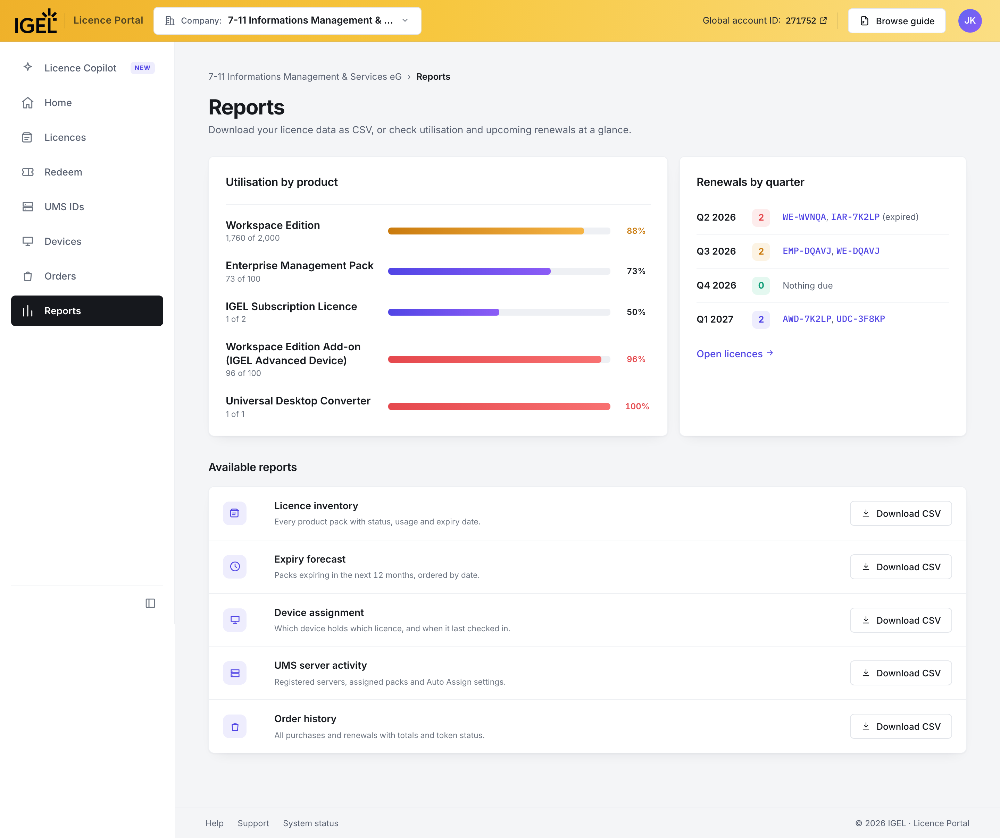
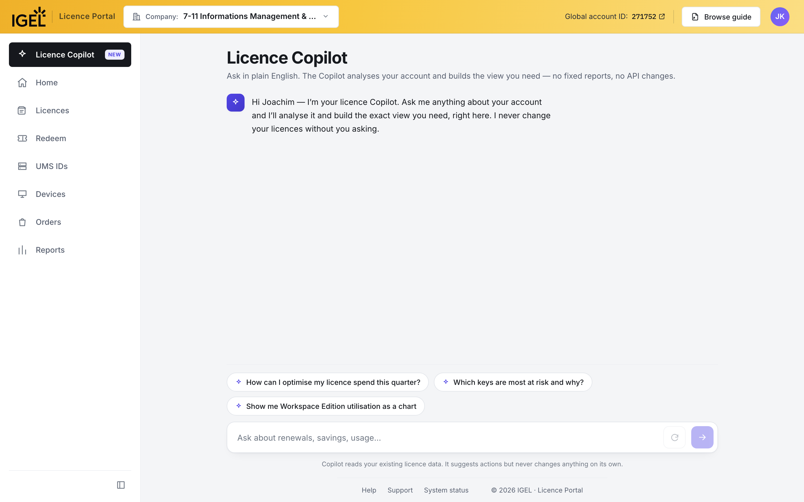
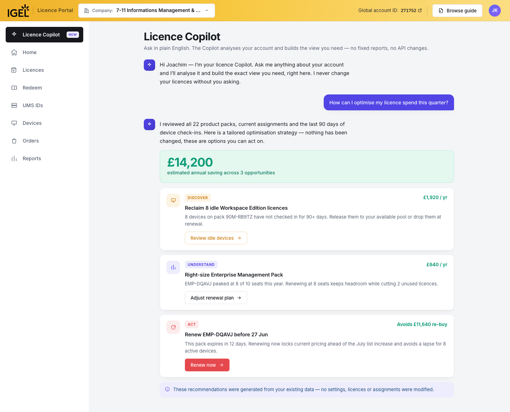
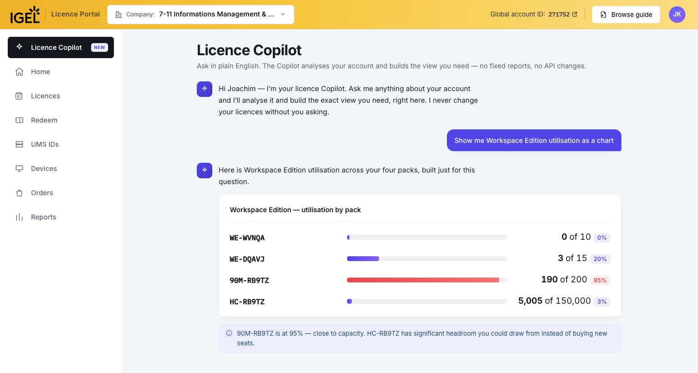
No fixed reports to hunt through, and no query language
The table or chart the question needs, not a page that half answers it
Nothing changes until you choose to, which is what Joachim asked for
The same company bar and plain language. The full portal is still there
07 · Validation
What was checked, and
what still needs testing
This was an RFP response, so IGEL judged the design, not admins. Before the deadline, our team sent IGEL 46 written questions and had an hour with their CIO, and his answers shaped the brief. Then we presented the clickable prototype and a recorded walkthrough. That tells me the reasoning held up. It doesn’t tell me Maria can run a renewal without help.
The brief
An hour with IGEL’s CIO and 46 written questions
Three user groups, Phase 1 front end only, four languages, WCAG AA
Used as the brief
The clickable prototype
IGEL clicked through the prototype and saw the recorded walkthrough
IGEL chose our proposal and is going ahead with the redesign
Engagement won
Plain names, guided tasks and the Copilot
Not yet checked with admins or partners
No evidence yet that they work better for Maria, Joachim or a partner
Not tested
What remained unresolved
Wording
The new names were agreed inside the team, not with the admins who will read them
Test in the build
Guide content
The steps for each guided task still need writing and checking with IGEL support
Open
Next best actions
The rules for which action shows first, and why, aren’t defined yet
Open
Copilot
Needs approval from IGEL’s legal and security teams before any AI touches customer data
Concept only
08 · Results and measurement limits
We won the work. The numbers
come after the build.
IGEL chose us, and they’re going ahead with the redesigned portal. I think four things won it, below. There are no usage numbers yet, because nothing has shipped, and I’m not going to guess at them.
Why I think we won
Built on their research
We started from IGEL’s own personas and audit, and said so. Nothing they’d done was thrown away.
Answers to their brief
Every screen traced back to a persona need, a support request or something the CIO said on our call.
Phase 1 respected
No change to the business logic, as Phase 1 required. Ambitious on the surface, careful underneath.
One step further
Next best actions, guided tasks and the Copilot showed what “more intelligent” could look like.
What I would measure once it ships
Renewals without help
How many renewals finish without a support ticket
Duplicate licences
How many duplicates are created each quarter, before and after
Time per guided task
Whether the rough times on each guide hold up in practice
Partner reporting time
How long a partner takes to answer a common licence question
09 · Reflection
Three things I took away
from this RFP
One thing I’d change: I’d ask for even three short sessions with real admins and partners before the deadline. IGEL’s personas were good, but they came from internal sources, and the whole redesign leans on them.
Design for how often people use it
A once‑a‑year tool and an every‑day tool are different products, even with the same features. Here they were the same portal, so it had to work at both speeds.
Credit the groundwork
Starting from IGEL’s own research, and saying so, made the proposal easier to trust. Evidence sells better than taste.
Modernise, don’t restart
Phase 1 couldn’t touch the logic, and it didn’t need to. Refactoring around the task did more, faster and with less risk than a rebuild would have.
Next case study
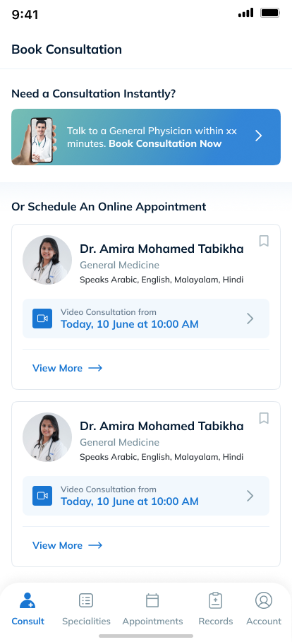


Telling patients what their insurance allows before they book, not after
Insured patients only found out at checkout that they couldn’t book. As lead designer in a team of four, I designed the parts every service shares first, from patient profiles and insurance states to one checkout, so each rule is checked while the patient can still act on it.
Patients book appointments, manage family profiles, and access care through one app.